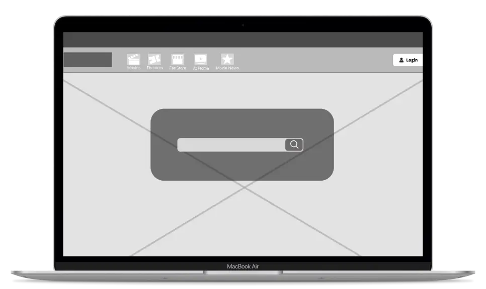

Fandango Homepage Redesign
Redesigning A Homepage!

Role:
UX/UI Designer
Team:
Group
Tool:
Figma
Duration:
12/2024
Problem:
The Fandango website is a popular platform for users to browse movies, purchase tickets, and access streaming options. This redesign critique focuses on three primary usability issues and suggests improvements on its Homepage based on established design principles to enhance navigation, reduce cognitive load, and create a more intuitive user experience.
Solution:
Our task as a team was to redesign one page, and so we tackled the homepage, where most of the problems we could find were. We focused on three primary usability issues in order to:
Enhance navigation
Reduce cognitive load
Create a more intuitive user experience
My Role:
My role within the team meant helping our team leader managing out scheduling, so when we would meet for Zoom to discuss plans. I helped creat wireframes, specfially for the Hero Section. I also played a part in writting our final written report of our project.
Research:
Individually, my teammates and I examined Fandango's homepage, taking notes on the design and the usability. Once we all had our reviews, we came together as a team to share our findings and to come up with at least three common problems we all saw.
Lack of visual feedback when hovering over movie titles
Navigation bar was barely noticeable due to its lack of contrast among other elements
Footer had badly-organized information that was unnecessarily large and hard to navigate through efficiently
Designing:
A teammate and I tackled the Hero Section. We decided to create the original wireframe to understand exactly what was going on. From there, we both gave input to improve the hero section. I had first suggested we create the navigation bar to be sticky, so that the user always has access to it without the need to scroll back up the page. We also highlighted the search bar with a distinctive border to ensure visibility.
Here was the low-fidelity wireframe of the Hero Section we created:

For the Hover Effect Issues, my other teammates solved this by implementing a hover state so the users could keep track of what movie they were on visually. Here was the low-fidelity wireframe:

Lastly, for the Footer, the information was reorganized and simplified, being placed in a more compact layout. Here was the low-fidelity wireframe:

Outcome:
The Fandango's homepage usability is restricted by limited visual feedback on movie cards, a hardly noticeable navigation bar, and a disorganized footer. By implementing richer hover states, improving the navigation bar's visibility, and categorizing footer links, Fandango can enhance user navigation and reduce cognitive load.
These changes, grounded in core design principles, will lead to a more intuitive and engaging user experience, ultimately benefiting both new and returning users.